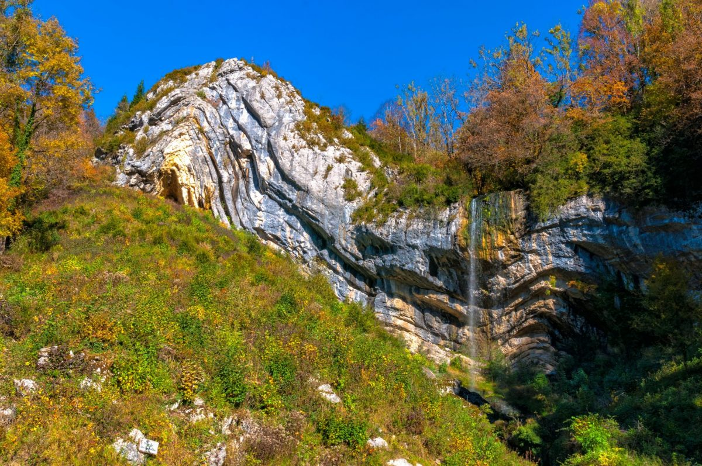
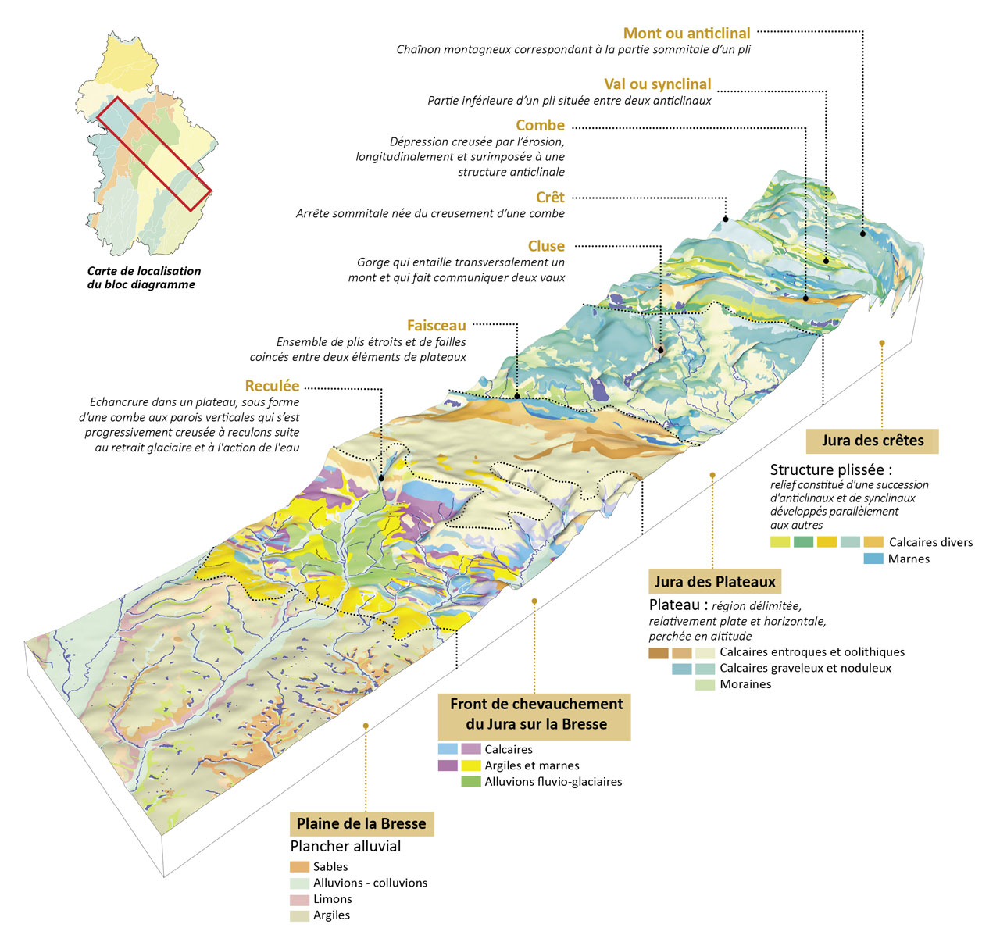
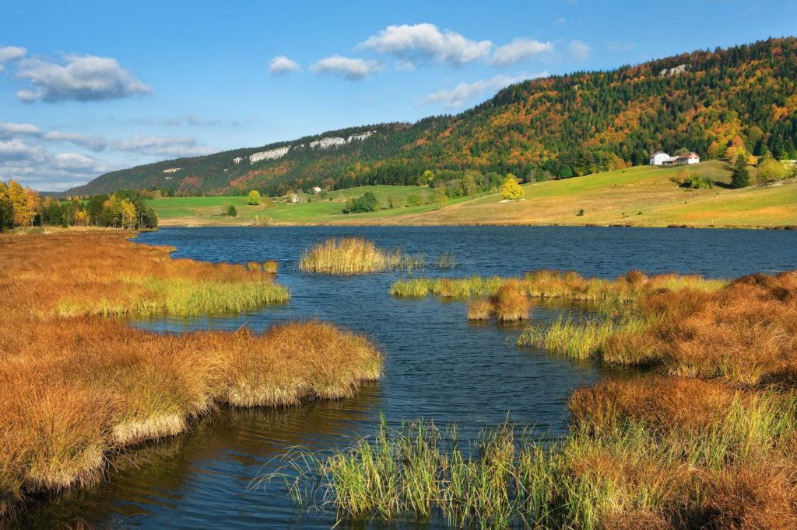

Géographie et Identité du Haut-Jura
Le Parc naturel régional du Haut-Jura s’étend sur un vaste territoire de moyenne montagne au cœur du massif jurassien, à la croisée des régions Bourgogne-Franche-Comté, Auvergne-Rhône-Alpes et de la Suisse. Cette situation géographique singulière confère au Parc un positionnement stratégique pour comprendre les flux et continuités écologiques.
Un massif d'exception
Un massif d'exception forgé par l'ère jurassique
Le Parc naturel régional du Haut-Jura s'ancre au cœur d'un territoire géologique fascinant : le massif jurassien. Cette chaîne de montagnes est si unique qu'elle a d'ailleurs donné son nom à une célèbre période géologique, le Jurassique. Il y a environ 150 millions d'années, la région était recouverte par une mer chaude et peu profonde, laissant derrière elle d'épaisses couches de roches calcaires. Plus tard, les puissantes poussées tectoniques liées à la formation des Alpes ont soulevé et plissé ces roches, créant un relief "en accordéon" tout à fait singulier.
C'est cette histoire géologique mouvementée qui explique pourquoi le paysage d'aujourd'hui se distingue par une alternance spectaculaire de plateaux calcaires, de vallées creusées appelées combes, de crêtes rocheuses nommées crêts, et de forêts profondes. Les ères glaciaires successives ont ensuite achevé de sculpter ce décor. Ces paysages typiquement jurassiques dessinent ainsi de grands ensembles naturels, ponctués d'éléments aquatiques emblématiques hérités de la fonte des glaces, tels que les tourbières d’altitude et les magnifiques lacs glaciaires.

stratigraphie du lieu-dit Képi de Gendarme

Coupe du massif jurassien (structure type d'un massif jurassique)
Explorer notre Territoire : L'Ascension Géographique
Naviguez au cœur de l'information pour explorer en détail les vallées, les plateaux et les hauts sommets qui forment le coeur de notre réseau naturel.
Rareté Exceptionnelle : Faune et Flore
Le socle géologique et topographique du massif jurassien engendre une mosaïque d'habitats d'une exceptionnelle richesse écologique. Les variations altitudinales, couplées à la rudesse du climat montagnard, structurent des écosystèmes singuliers où s'entremêlent forêts d’altitude (pessières, hêtraies-sapinières) et alpages, incluant les emblématiques pré-bois. Ces milieux, souvent relictuels des dernières glaciations à l'image des tourbières acides, abritent une flore hautement spécialisée et agissent comme de véritables réservoirs de biodiversité.
Cette intégrité paysagère offre un refuge vital à une faune patrimoniale particulièrement sensible aux perturbations anthropiques et à la fragmentation spatiale. Le Parc naturel régional du Haut-Jura constitue notamment un bastion stratégique pour le maintien des continuités écologiques de grands prédateurs comme le lynx boréal (Lynx lynx), espèce parapluie exigeante en matière de tranquillité forestière. Les escarpements rocheux et les crêts offrent quant à eux un terrain d'évolution optimal pour le chamois (Rupicapra rupicapra). Enfin, ces massifs abritent l'un des derniers bastions français du grand tétras (Tetrao urogallus), une espèce relique d'origine taïgique, dont l'extrême vulnérabilité au dérangement (notamment lors des pratiques de sports d'hiver) cristallise les enjeux de conservation modernes.
La préservation de ces cortèges faunistiques et floristiques dépasse le simple cadre de l'inventaire naturaliste : elle nécessite une gestion intégrée du territoire. L'enjeu pour le Parc est de concilier la protection stricte des zones de quiétude et des corridors biologiques avec le maintien des activités sylvopastorales traditionnelles et le développement touristique.

Source : jura-tourism.com

Source : randonature.parc-haut-jura.fr
L'Observatoire permet de visualiser les zones de protection pour mieux comprendre les interactions entre les activités humaines et la préservation des milieux naturels.